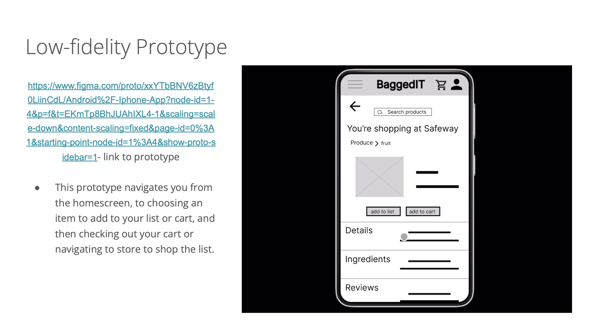
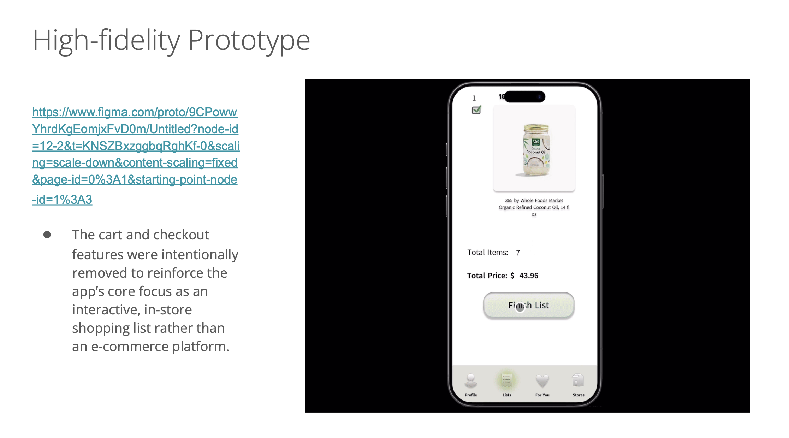
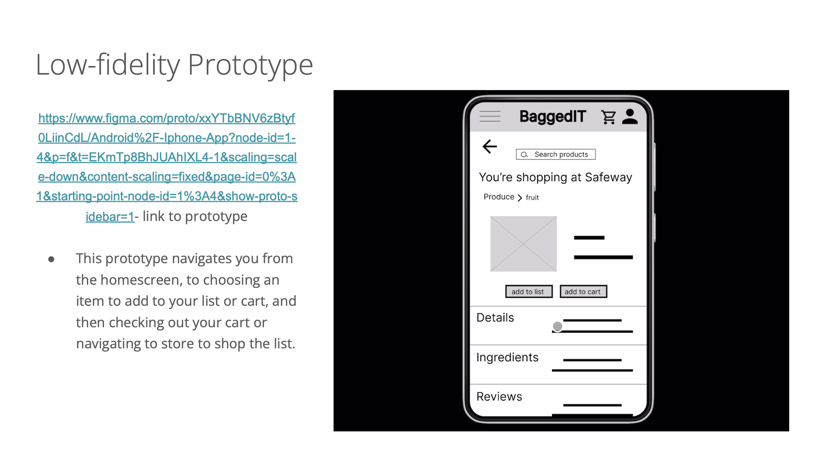
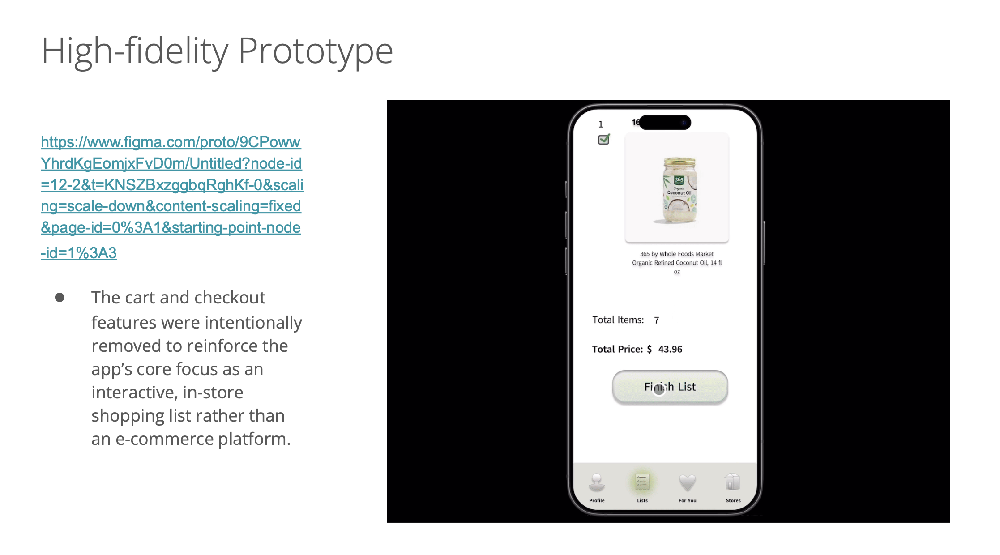
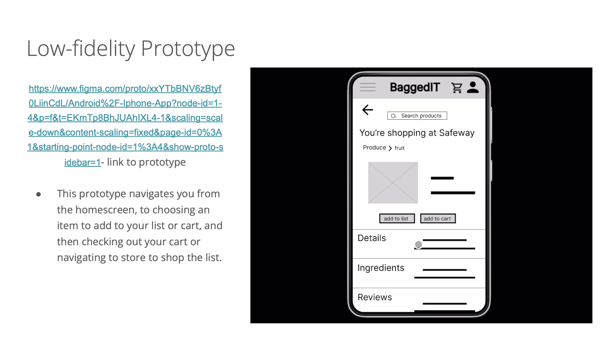
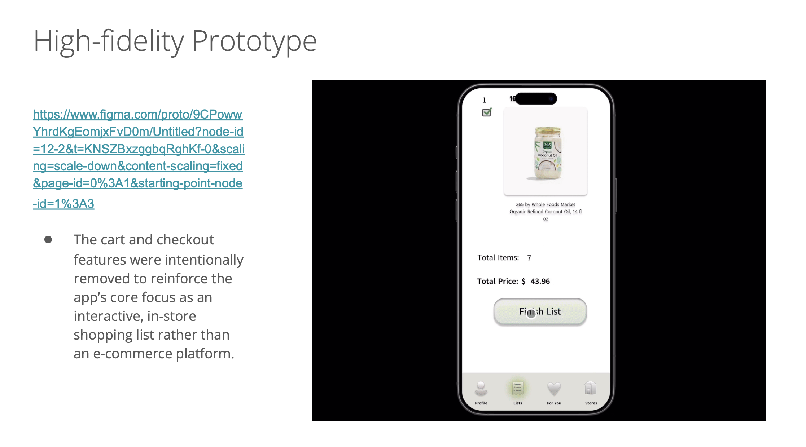

"Designing Clarity in Chaos" – Making in-store shopping effortless and intuitive.
BAGD is an interactive shopping list app designed to streamline and simplify the in-store shopping experience for busy shoppers. Users can create multiple shopping lists at different grocery stores, and the app maps the store layout to intuitively guide them through their shopping journey.
We conducted user interviews to understand individual grocery shopping habits. While we initially assumed shoppers would share similar needs, we discovered behaviors vary widely. Shoppers visit stores for different reasons, move at different paces, and often struggle to locate products even when purchasing the same items repeatedly.
Based on research, we developed wireframes, low-fidelity prototypes, static mockups, and high-fidelity prototypes, iterating to refine the app. The design emphasizes simplicity, clarity, and intuitive navigation through grocery stores of any size.

